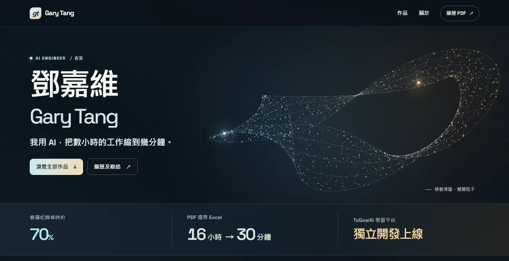

← 全部作品／ 產品開發


成果一頁履歷 → 可操作作品
§ 重點
一眼看懂
- 流程
- 編排內容按交付結果整理作品，每個案例有獨立可分享的網址。
- 接入實證保留本機 Excel 驗收、n8n 執行輸出及 3D 視圖。
- 照顧裝置設計滑鼠、觸控與鍵盤操作，保留減少動態偏好和舊履歷連結。
- 工具
- HTML
- CSS
- JavaScript
- GitHub Pages
§ 做法做法細節
網站以靜態頁面部署到 GitHub Pages，與履歷 PDF 互相連結。
做法
- 生成
- Python 建置腳本讀取 JSON 內容（作品、工程細節、驗證資料），生成首頁和每個個案頁；內容與版面分開。
- 粒子
- 首頁背景是 WebGL2 粒子（HDR 浮點緩衝加色調映射）；不支援時退回 2D Canvas。
- 示範
- 互動示範沿用原工具的程式或輸出，例如 Excel 驗收、n8n 執行結果和 3D 視圖。
- 驗證
- Playwright 腳本在 5 種螢幕闊度檢查橫向溢出和主控台錯誤，並逐條測試舊網址轉址。
- 部署
- 靜態頁面部署到 GitHub Pages。